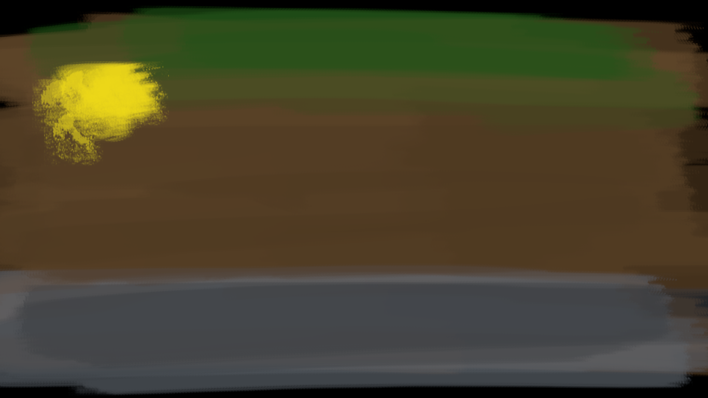

<!doctype html>
<meta name="viewport" content="width=device-width, initial-scale=1.0, maximum-scale=1.0, user-scalable=no">

<!-- LOADING SPLASH -->
<style>dialog#loading { color: white; text-align: center; font-size: 32px; font-family: monospace; border: none; outline: none; background: none; &::backdrop { background: black; } &[loading] { cursor: wait; &::backdrop { background: black; } } }</style><dialog id="loading" loading>loading...<script>document.currentScript.parentElement.showModal()</script></dialog>

<!-- ENGINE -->
<script src="modules/engine/peggy.min.js"></script>
<script src="modules/engine/engine.js"></script>
<link href="modules/engine/engine.css" rel="stylesheet">

<!-- VIDEOTOME -->
<script src="modules/grammars/videotome.js"></script>
<script src="modules/grammars/bideotomo.js"></script>
<script src="modules/videotome/videotome.js"></script>
<link href="modules/videotome/videotome.css" rel="stylesheet">

<!-- GAME CONTENT -->
<template assets>
<audio id="SFX_ECHOES" src="assets/SFX_ECHOES.mp3"></audio>
<audio id="MUS_TITLE" src="assets/MUS_TITLE.mp3"></audio>
<audio id="MUS_DAY1" src="assets/MUS_DAY1.mp3"></audio>





</template>

<style>
@font-face {
  font-family: YanoneKaffeesatz;
  src: url(./assets/YanoneKaffeesatz-Medium.ttf);
}

.text {
  color: #FAF9F6;
  text-align: center;
  
  text-shadow: 2px 2px 4px black;

  font-family: YanoneKaffeesatz;
}

.nancy, .N {
    color: #cfeef9;
    text-align: left;
}

.sophie, .S {
    color: #eccedf;
    text-align: right;
}

.text:not(:last-child) {
  color: #6A6A6A;
}
</style>

<script id="passages/main2" type="text/videotome" grammar="grammars/videotome">
démarrer
MUS_TITLE - domino club presents
HOT WET
CLEARSCREEN - 
MUS_DAY1 - the train pulls away and leaves me alone
CLEARSCREEN BG_RAPESEED - the sun beats down 
SFX_ECHOES - gentle breeze
SFX_ECHOES - crickets chirp
chirp
chirp
...
nice and peaceful
i raise the camera to my eye
S! - NANCY? IS THAT YOU?
through the viewfinder i see a woman 
thirty or forty i'm bad with age
older than me
brown hair past her shoulders
a sort of chestnut color
one hand raised to shield her eyes
loose white dress with slim blue stripes
ends around her knees
legs bare below but for a pair of sandals
snap
BG_SOPH - photograph
N! - UM. MISS SOPHIE?
smile
S! - IT IS YOU! 
S! - I WAS WORRIED YOU MISSED THE STATION
N! - UH I MADE IT JUST FINE
S! - THAT'S GREAT. I'LL SHOW YOU TO THE INN
S! - IT'S NOT FAR TO WALK.
S! - YOU MUST BE TIRED FROM TRAVELLING. BIG BAG!
N! - NOT REALLY. IT'S JUST SITTING DOWN
giggle
she has a natural friendliness
i
do not
short awkward dyke with dumb hair
undercut growing out
S! - I LIKE YOUR HAIR, NANCY
S! - VERY PUNK ROCK
N! - OH UH THANKS
S! - I CAN NEATEN UP THE BACK FOR YOU IF YOU WANT?
S! - OR IF YOU WANT A PROFESSIONAL THERE'S A BARBER
S! - THREE VILLAGES OVER
i laugh
at the suggestion of a professional
N! - WASN'T A PROFESSIONAL WHO DID IT THE FIRST TIME
N! - JUST SOME DRUNK FRIENDS
S! - AH. YOUTH IS SO AMAZING, ISN'T IT?
stare at my feet
BG_RAPESEED - walk in silence
not awkward but not comfortable
i look at the fields we pass
hedges thin and low
great swathes of yellow rape waving in the sun
we arrive
S! - HERE WE ARE :)
S! - I HOPE IT'S NOT TOO RUSTIC FOR A CITY GIRL
it's lovely
BG_INN - large old house built half into a cave
footpaths all ways
small carpark, four cars
the guests
N! - IT LOOKS REALLY NICE
S! - I'M GLAD. COME IN AND I'LL SHOW YOU YOUR ROOM
we go
S! - IT'S THE EARLY SEASON RIGHT NOW
S! - NOT VERY BUSY
S! - I WON'T BE ABLE TO PAY THAT MUCH
N! - THAT'S OKAY. I AM
burnt out
dumb stupid fuck
uni was too hard for you was it
idiot
can't just stare at the ceiling all day
N! - JUST HAPPY TO HAVE A CHANGE OF PACE
she laughs
brushes hair back from her shoulder
hickey
little red mark on her collarbone
S! - WELL IT'S DEFINITELY NOTHING LIKE THE CITY
S! - THAT'S WHY PEOPLE COME HERE
BG_ROOM S! - AND WE'RE HERE! THIS IS YOUR ROOM :)
it's cosy
single bed, wooden headboard
desk and wardrobe
window out onto the garden
N! - UH. IT'S COSY
S! - EHEHE THAT'S A POLITE WAY OF SAYING SMALL
N! - UH - I MEANT IT! I LIKE SMALL SPACES
N! - IT'S LIKE...
i can touch every wall if i want to
the snail seeks a shell its size
five foot two, small shell
N! - I CAN FILL UP THE SPACE WITHOUT FEELING SMALL
N! - EMOTIONALLY, I MEAN
N! - UHH Y'KNOW LIKE. VIBES. SORRY
she giggles again
finger to her mouth for a second
S! - NO I GET WHAT YOU MEAN. 
S! - I'LL LEAVE YOU TO GET SETTLED
S! - CUP OF TEA IN TWENTY MINUTES?
S! - I'LL SHOW AND TALK YOU THROUGH THE JOB
inn housekeeper assistant
what is there to really talk through?
serve breakfast clean sheets vacuum
smile little fake smile at guests
well i'm not great at that last part
N! - THAT WOULD BE GREAT THANKS
N! - I'LL UH PUT MY STUFF AWAY
she leaves
i breathe
BG_CLEAR - play the rest of the example game at <a href="https://dominoclub.itch.io/hot-wet"> dominoclub.itch.io/hot-wet</a>
CLEARSCREEN - KEEP GOING TO RESTART
</script>

<script id="passages/main" type="text" grammar="grammars/bideotomo">
:start
!music MUS_TITLE

domino club presents
HOT WET

!clear
!music MUS_DAY1

the train pulls away and leaves me alone

!clear
!background BG_RAPESEED

the sun beats down 

!sound SFX_ECHOES

gentle breeze

!sound SFX_ECHOES

crickets chirp
chirp
chirp

:repeat
? horsey 🐎
? next 👸
? dialogue ♟️
!stop

:horsey
very aggressive
!stop

:next
nice and peaceful
i raise the camera to my eye
.sophie NANCY? IS THAT YOU?
. through the viewfinder i see a woman 
thirty or forty i'm bad with age
older than me
brown hair past her shoulders
a sort of chestnut color
one hand raised to shield her eyes
loose white dress with slim blue stripes
ends around her knees
legs bare below but for a pair of sandals
snap

:dialogue
!background BG_SOPH
photograph
.nancy 
UM. MISS SOPHIE?
. 
smile
.sophie IT IS YOU! 
I WAS WORRIED YOU MISSED THE STATION
.nancy UH I MADE IT JUST FINE
.sophie THAT'S GREAT. I'LL SHOW YOU TO THE INN
IT'S NOT FAR TO WALK.
YOU MUST BE TIRED FROM TRAVELLING. BIG BAG!
.nancy 
NOT REALLY. IT'S JUST SITTING DOWN
. giggle
she has a natural friendliness
i
do not
short awkward dyke with dumb hair
undercut growing out
.sophie I LIKE YOUR HAIR, NANCY
VERY PUNK ROCK
.nancy OH UH THANKS
.sophie I CAN NEATEN UP THE BACK FOR YOU IF YOU WANT?
OR IF YOU WANT A PROFESSIONAL THERE'S A BARBER
THREE VILLAGES OVER
.
i laugh
at the suggestion of a professional
.nancy 
WASN'T A PROFESSIONAL WHO DID IT THE FIRST TIME
JUST SOME DRUNK FRIENDS
.sophie
AH. YOUTH IS SO AMAZING, ISN'T IT?
.
stare at my feet
!background BG_RAPESEED.png
walk in silence
not awkward but not comfortable
i look at the fields we pass
hedges thin and low
great swathes of yellow rape waving in the sun
we arrive
.sophie 
HERE WE ARE :)
I HOPE IT'S NOT TOO RUSTIC FOR A CITY GIRL
.
it's lovely
BG_INN.png - large old house built half into a cave
footpaths all ways
small carpark, four cars
the guests
.nancy 
IT LOOKS REALLY NICE
.sophie 
I'M GLAD. COME IN AND I'LL SHOW YOU YOUR ROOM
we go
IT'S THE EARLY SEASON RIGHT NOW
NOT VERY BUSY
I WON'T BE ABLE TO PAY THAT MUCH
.nancy
THAT'S OKAY. I AM
.
burnt out
dumb stupid fuck
uni was too hard for you was it
idiot
can't just stare at the ceiling all day
.nancy JUST HAPPY TO HAVE A CHANGE OF PACE
. she laughs
brushes hair back from her shoulder
hickey
little red mark on her collarbone
.sophie WELL IT'S DEFINITELY NOTHING LIKE THE CITY
.sophie THAT'S WHY PEOPLE COME HERE
!background BG_ROOM.png
.sophie AND WE'RE HERE! THIS IS YOUR ROOM :)
. it's cosy
single bed, wooden headboard
desk and wardrobe
window out onto the garden
.nancy UH. IT'S COSY
.sophie EHEHE THAT'S A POLITE WAY OF SAYING SMALL
.nancy UH - I MEANT IT! I LIKE SMALL SPACES
.nancy IT'S LIKE...
. i can touch every wall if i want to
the snail seeks a shell its size
five foot two, small shell
.nancy I CAN FILL UP THE SPACE WITHOUT FEELING SMALL
.nancy EMOTIONALLY, I MEAN
.nancy UHH Y'KNOW LIKE. VIBES. SORRY
. she giggles again
finger to her mouth for a second
.sophie NO I GET WHAT YOU MEAN. 
.sophie I'LL LEAVE YOU TO GET SETTLED
.sophie CUP OF TEA IN TWENTY MINUTES?
.sophie I'LL SHOW AND TALK YOU THROUGH THE JOB
. inn housekeeper assistant
what is there to really talk through?
serve breakfast clean sheets vacuum
smile little fake smile at guests
well i'm not great at that last part
.nancy THAT WOULD BE GREAT THANKS
.nancy I'LL UH PUT MY STUFF AWAY
. she leaves
i breathe
!background BG_CLEAR.png
play the rest of the example game at <a href="https://dominoclub.itch.io/hot-wet"> dominoclub.itch.io/hot-wet</a>
!clear
KEEP GOING TO RESTART
!jump start
</script>

<!-- LIVE RELOAD FIX -->
</body>
